Visokoučinkovita multiplatformska radna stanica za pixel art u Rustu. Višestazna vremenska traka, lukova koža (Onion Skinning), sloj skica i izvoz za pokretače igara.
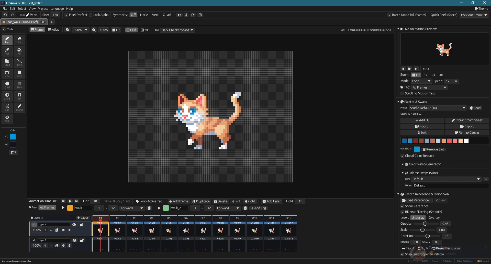
Designed for Indie Game Developers & Pixel Artists
Independent layer tracks (V1, V2, V3...), layer visibility/locking, merge down, variable frame duration multipliers, linked frames, and loop tags.
Real-time multi-frame ghosting with independent previous and next frame tinting (red/blue), opacity falloff curves, and loop wrap-around support.
The game sprite atlas texture is the single source of truth. Edit individual frames or switch seamlessly to the global atlas view while keeping tiles synchronized.
Load concept art or reference photos (PNG, JPEG, WebP) as an underlay with free pan, zoom, opacity, and smart color sampling with palette snapping.
Pixel-perfect line mode, custom brush stamping from selection, 3-click quadratic Bézier curves, solid flood-fill lasso, magic wand, and marching ants.
Create character skin variants (Day/Night, Team colors, Elemental skins) with instant palette swapping. Import and export GPL, PAL, and HEX palette formats.
Color replacement with canvas/palette eyedropper, HSV adjustments, automatic outline generator, 3x3 convolution filters, and RotSprite free rotation.
Auto-detect sprite boundaries from raw sheets, configure 9-slice scalable UI margins, and pack textures with power-of-two padding and border extrusion.
Export scaled PNGs with extruded borders to eliminate texture bleeding, generate animated GIFs, and produce standard sprite sheet JSON metadata.
Immerse yourself with authentic vintage hardware aesthetics including CRT Amber, CRT Green, Famicom, Mega Drive, Game Boy, Commodore 64, and PSX.
Set custom origin rotation pivots and place named game socket points (e.g. muzzle flash, item grip, particle source) per frame with automatic metadata export.
Written in Rust for blistering performance on Windows, Linux, and macOS. A zero-install browser build is also available via WebAssembly (experimental status).
Comprehensive 15-tool precision pixel art suite with 1-column / 2-column dock layouts and instant swatch swapping (X).
| Tool | Shortcut | Settings & Options | Description & Workflow |
|---|---|---|---|
|
Pencil
Pencil Tool
|
P | 1–64 px Pixel-Perfect | The fundamental pixel art instrument. Pixel-Perfect mode algorithmically eliminates staircase corners and double pixels on diagonal strokes. |
|
Eraser
Eraser Tool
|
E | 1–64 px Alpha Clear | Removes pixel data back to transparency on the active layer without altering adjacent locked or unlocked layers. |
|
Eyedropper
Pipette
|
I / Alt | Canvas / Sketch Palette Snap | Samples pixel colors directly from the canvas or reference sketch. Left-click assigns Primary swatch; Right-click sets Secondary swatch. |
|
Paint Bucket
Flood Fill
|
G | Tolerance 0–255 Contiguous / Global | Flood-fills contiguous color regions or replaces all matching color pixels across the frame with adjustable color tolerance. |
|
Gradient
Linear & Radial
|
U | Linear / Radial Dithering | Interactive two-point gradient interpolation between Primary and Secondary swatches with optional retro Bayer pattern dithering. |
|
Line
Bresenham Line
|
V | 1–64 px Shift-Snap | Draws straight pixel lines using Bresenham algorithm with live drag preview. Hold Shift to lock angles to 0°, 45°, and 90°. |
|
Bézier Curve
Quadratic Spline
|
C | 1–64 px 3-Point Spline | Three-point quadratic Bézier curve: click to establish start point, drag to end point, and drag middle control node for silky organic curves. |
|
Rectangle
Geometric Box
|
R | Outline / Solid / Both Shift-Square | Rasterizes boxes and rectangles. Toggle stroke outline, solid color fill, or filled with border. Holding Shift constrains to a square. |
|
Ellipse
Midpoint Circle
|
O | Outline / Solid / Both Shift-Circle | Midpoint ellipse and circle rasterizer. Toggle outline or solid fill modes. Holding Shift forces an equidistant circle. |
|
Dither Brush
Pattern Shader
|
D | Bayer 2×2 / 4×4 / 8×8 Checker / Diagonal | Authentic retro hardware shading alternating primary and secondary pixels according to classic Bayer and custom matrices. |
|
Shading
Ramp Stepper
|
H | Lighten / Darken Palette Ramps | Steps pixel colors up or down within color ramps defined in the current palette. Ideal for non-destructive highlights and shadows. |
|
Rect Select
Marquee Selection
|
M | Marching Ants Clipboard | Defines rectangular pixel bounding boxes with animated marching ants boundary. Supports clipboard copy, cut, paste, and move. |
|
Lasso Select
Polygonal Lasso
|
L | Freehand Polygon Auto-Close | Freeform polygonal selection tool. Draw organic boundaries around complex shapes, characters, and props for isolated manipulation. |
|
Magic Wand
Color Selector
|
W | Tolerance 0–255 Contiguous / Global | Selects color-contiguous or canvas-wide pixel clusters matching clicked pixel color within an adjustable RGB tolerance. |
|
Pivot & Sockets
Action Points
|
Y | Rotation Pivot Named Sockets | Defines frame rotation pivot center and assigns custom named socket points (e.g. muzzle, grip, sparks, mount). |
A deep dive into the user interface and key creative modules.
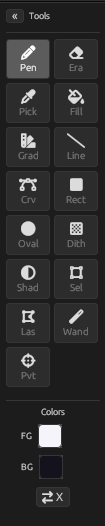
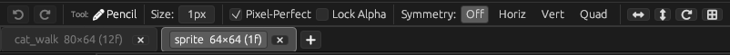
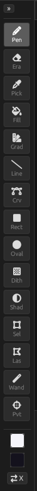
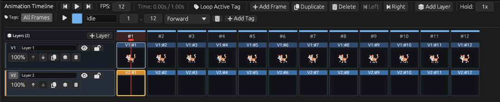
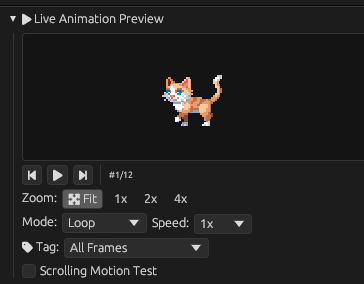
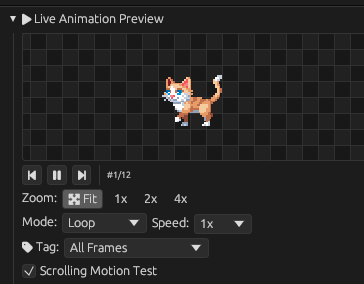
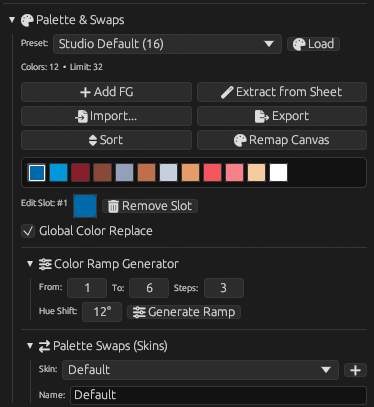
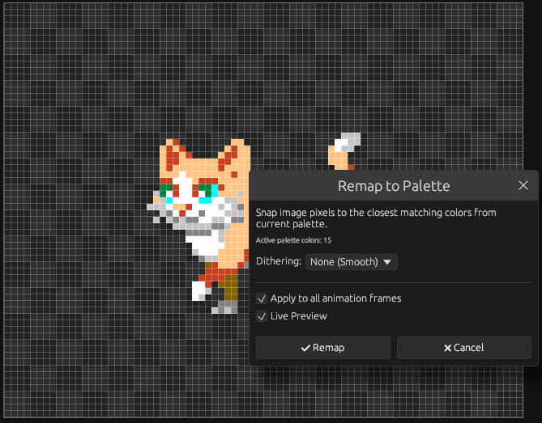
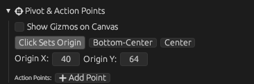
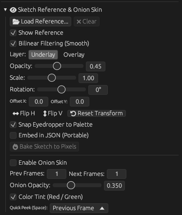
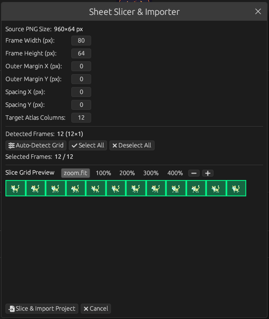
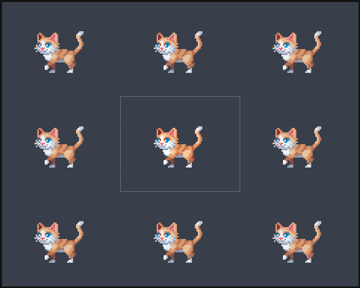
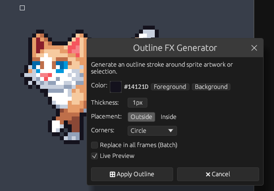
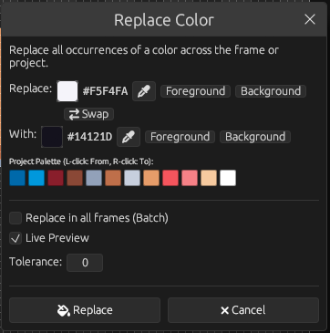
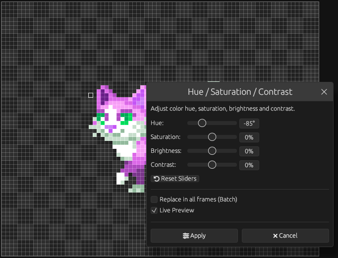
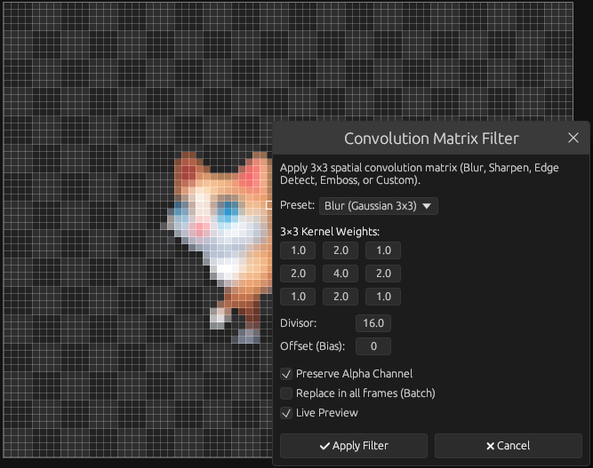
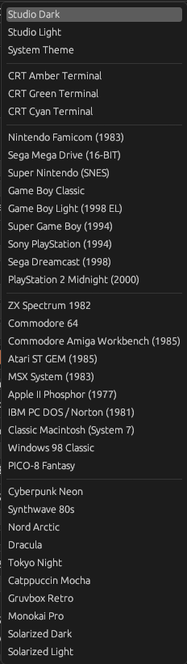
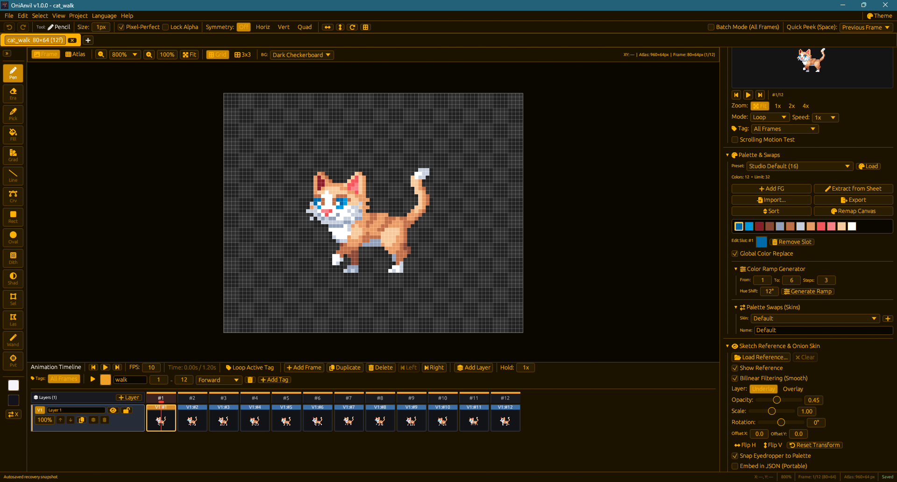
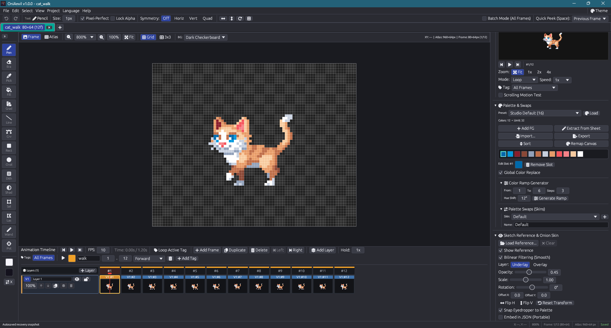
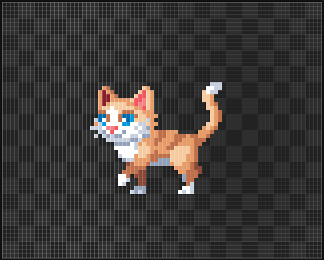
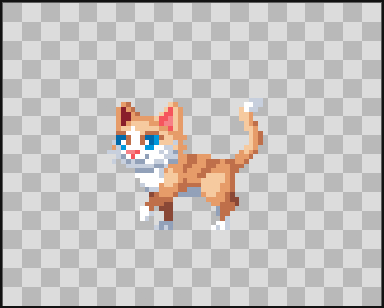
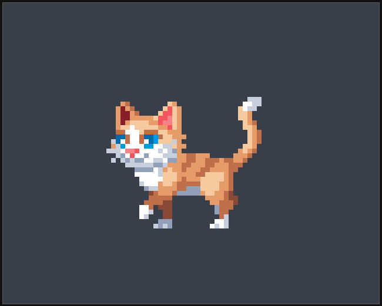
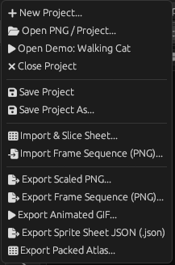
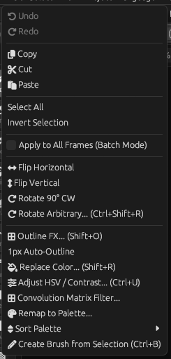
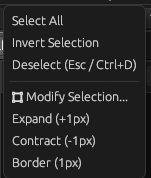
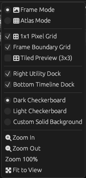
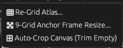
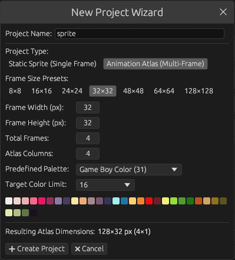
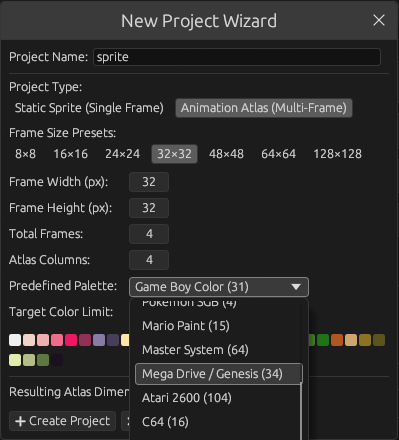
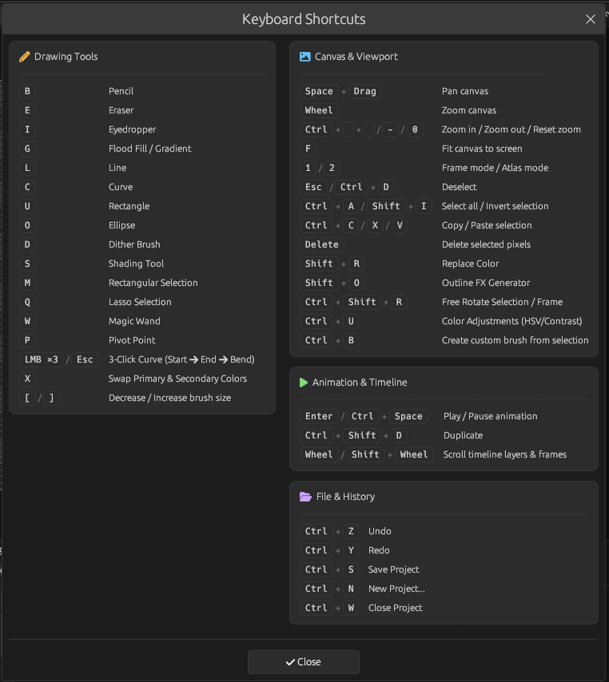
Optimized for rapid one-handed muscle memory.
| Shortcut | Tool / Action | Description |
|---|---|---|
| P | Pencil | 1px precision drawing with optional Pixel-Perfect mode |
| E | Eraser | Clear pixels back to transparency on active layer |
| I / Alt | Eyedropper | Sample color from active canvas or reference sketch |
| G | Paint Bucket | Flood fill contiguous or global color region with tolerance |
| U | Gradient | Linear and radial gradients with dithering support |
| V | Line | Straight lines with Shift angle constraint |
| C | Bézier Curve | Smooth 3-point quadratic spline curve |
| R | Rectangle | Outlined or solid rectangular shapes (Shift for square) |
| O | Ellipse | Outlined or solid ellipses (Shift for perfect circle) |
| D | Dither Brush | Pattern dither drawing with Bayer and checker matrices |
| H | Shading | Step lighter or darker through palette color ramps |
| M | Rectangular Select | Select rectangular region with marching ants boundary |
| L | Lasso Select | Freehand polygonal selection with auto-closing loop |
| W | Magic Wand | Select color-contiguous pixel regions within tolerance |
| Y | Pivot & Sockets | Place rotation pivot point and named attachment sockets |
| X | Swap Swatches | Swap Primary and Secondary active color swatches |
| Ctrl/Cmd+C / X / V | Clipboard | Copy, Cut, and Paste selected pixel clusters across frames |
| Space | Play / Pause | Toggle real-time animation playback in timeline |
| A / D | Step Frames | Step to Previous or Next animation frame |
| Shift+R | Replace Color | Modal to swap colors with live preview and pipette |
| Ctrl/Cmd+U | Color Adjust | HSV hue shift, saturation, and contrast adjustment |
| Ctrl/Cmd+R | Free Rotate | Arbitrary angle rotation using RotSprite algorithm |
| Space+Drag | Pan Canvas | Smooth infinite panning across canvas coordinates |
| Ctrl/Cmd+Wheel | Zoom | Pixel-crisp zoom centered around mouse cursor |
Standalone zero-dependency desktop binaries and web client.
Run directly in Chrome, Firefox, Safari, Edge
Zero installation required.
⚠️ Note: Web build is experimental and may contain browser-specific bugs.